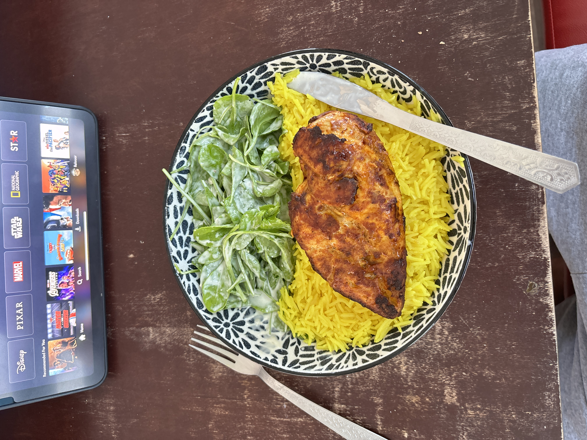

Turmeric Garlic Rice

Description
This turmeric rice recipe is light, fragrant, and is a perfect companion to any meat dishes.
It is super easy to make and provides you with delicious and flavourful rice.
Ingredients
- 1/2 cup Basmati rice
- 1/4 Tsp ground turmeric
- 2 cloves of minced garlic
- salt and pepper (to taste)
- 1 cup water
Steps
- In a small saucepan, combine your rice and some water (do not measure this)
- Swirl the rice in the water as it gets cloudy
- Strain the water out and put more water in (repeat steps 1-3 until the water is clear)
- Now in your pan with your washed rice, add your measured water
- Put in your minced garlic and turmeric
- Cover the saucepan and turn the heat to medium-high
- Let the water get to a boil and turn the heat down to medium-low
- Cook until the water dries out or until the rice is cooked to your desired texture
- Strain your rice if needed, plate, and enjoy!